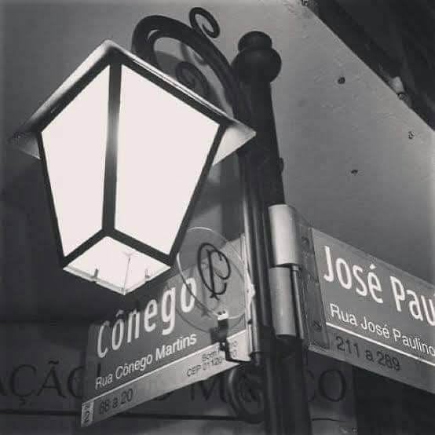

CRIAÇÃO
O TIME DO POVO
Às 20h30 do dia 1º de setembro, à luz de um lampião, na esquina das ruas José Paulino e Cônego Martins, no bairro do Bom Retiro, o grupo de operários formado por Anselmo Corrêa, Antônio Pereira, Carlos Silva, Joaquim Ambrósio, Raphael Perrone e mais 8 sócios, fundaram o Sport Club Corinthians Paulista, o nome foi inspirado no time inglês, Corinthian-Casuals Football Club, que nessa ocasião estava fazendo uma expedição em São Paulo.